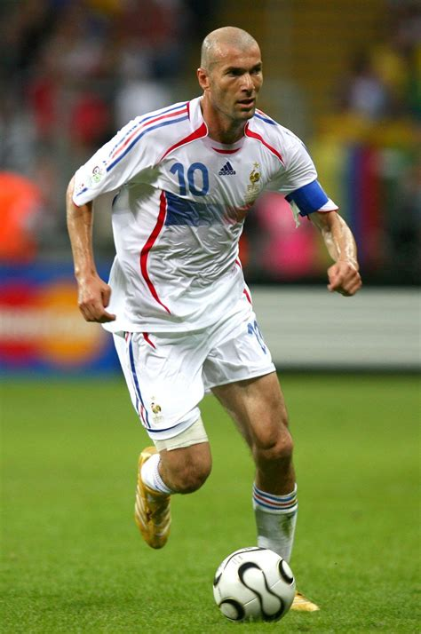

Je vous présente ici mes trois joueurs favoris ainsi qu'un bref résumé de leurs carrières, leurs attributs et leurs accomplissements.
Cristiano Ronaldo
Cristiano Ronaldo dos Santos Aveiro était le choix le plus évident pour moi. J'ai grandi avec lui, lui qui a ses débuts était un joueur spectaculaire mais moins efficace. Il a gagné cette efficacité dans la suite de sa carrière, ce qui lui a valu de devenir le meilleur buteur de l'histoire du sport et de remporter 5 Ballons d'Or, trophée récompensant chaque année le meilleur joueur du monde. A 39 ans, il semble approcher de la retraite mais il continue de marquer et de battre des records, si bien qu'il pourrait devenir le premier joueur de l'histoire à atteindre la barre des 1000 buts en carrière. Exemple de volonté, de travail et de détermination, son influence dépasse largement la sphère du sport et fait de lui un modèle pour de nombreux jeunes, en témoigne son compte instagram qui est le plus suivi au monde.
Zinedine Zidane
Comment ne pas évoquer Zinedine Zidane, le plus grand joueur français de tous les temps. Né en 1972 à Marseille, il débute sa carrière en 1988 et y met un terme en 2006. Je n'ai donc pas eu l'occasion de le voir jouer en direct mais toutes les vidéos et rediffusions de ses matchs m'ont suffi pour tomber amoureux de son jeu. Son élégance, sa technique fine et son charisme lui ont valu des louanges tout au long de sa carrière. Adulé en Espagne et adoré en Italie, c'est bien en France qu'il est une idole, ayant permis à son pays de remporter la première Coupe du Monde et la deuxième Coupe d'Europe de son histoire. Véritable leader technique de la sélection, il est l'homme fort de ces deux succès qui lui valent notamment le Ballon d'Or de l'édition 1998. Sa carrière est également marquée par des coups de sang et des gestes déplacés, le plus mémorable étant ce coup de tête en finale de Coupe du Monde 2006 qui lui vaudra un carton rouge et qui précèdera la défaite des Bleus face à l'Italie. Malgré tout, il reste un joueur qui marquera les esprits par son talent, sa grâce et son style de jeu inimitable.
- 
Antoine Griezmann
S'il n'est pas considéré au même niveau que les deux joueurs cités précédemment, il est de loin mon favori. Rarement reconnu à sa juste valeur, il est pourtant le joueur qui fait tourner une équipe par son sens du placement, sa justesse technique, son excellente vision du jeu et sa générosité dans les efforts fournis. Le parfait mélange entre un attaquant et un milieu de terrain, il brille par sa grande polyvalence. Peut-être n'a-t-il d'ailleurs pas assez brillé, lui qui a toujours placé l'intérêt de l'équipe avant ses aspirations personnelles. Cela lui aura coûté de gagner ce Ballon d'Or qu'il méritait peut-être en 2016 et en 2018. Véritable icône de l'Atlético Madrid, dont il est le meilleur buteur et indubitablement le meilleur joueur, il y connaîtra ses plus belles années et a failli amener son équipe au trophée le plus convoité de tous: la Ligue des Champions. En France, il est le joueur clé de la dernière décennie, qui a vu la France remporter la Coupe du Monde en 2018 et participer à la finale de la Coupe d'Europe 2016 et de la Coupe du Monde 2022.

Quelques joueurs méritant plus d'attention